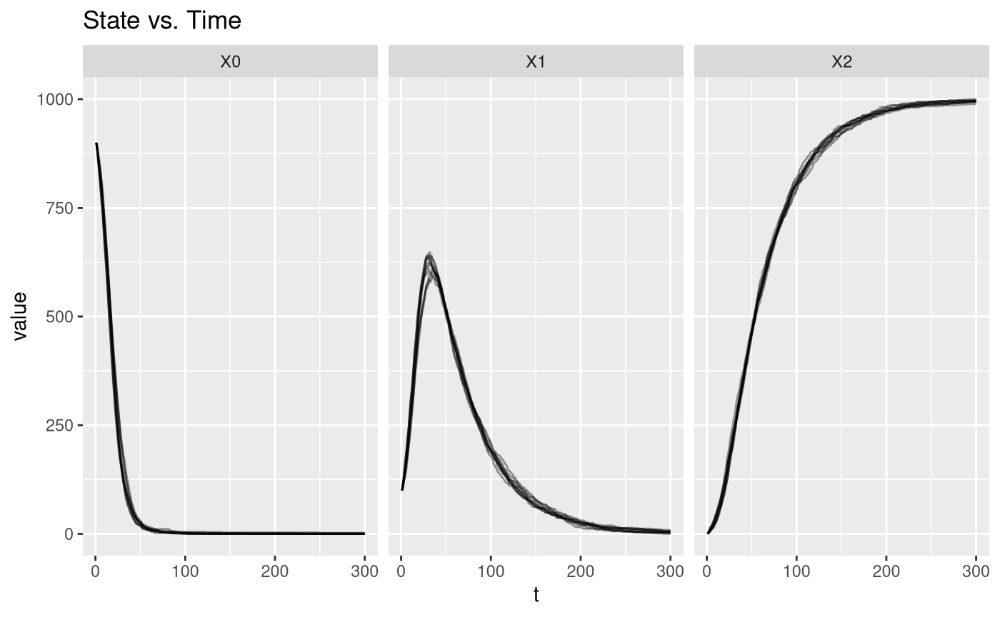
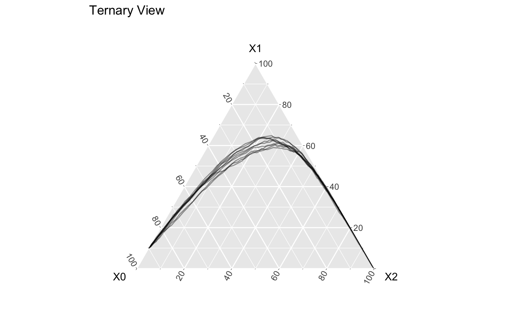
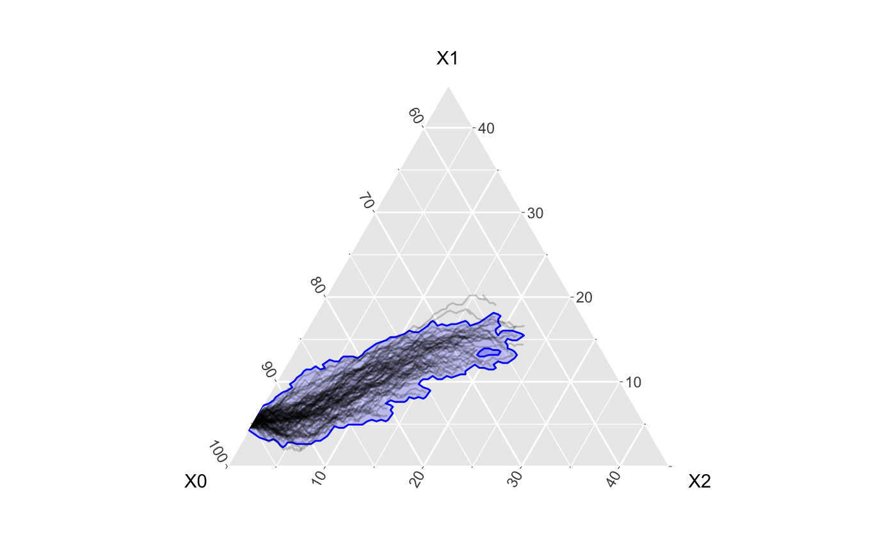

vignettes/not-built-vignettes/example-epimodel.Rmd
example-epimodel.RmdThe software suite EpiModel (Jenness, Goodreau, and Morris 2018) (R package: EpiModel) provides a number of tools in order to simulate and analyze epidemic models, especially those of the form \(S \rightarrow I \rightarrow R\), where \(S\) stands for susceptible, \(I\) stands for infectious, and \(R\) stands for recovered.
In this vignette, we walk through how to convert your models from EpiModel and visualize and assess them with EpiCompare.
You will need to install/load the following packages.
EpiModel allows the user to make a variety of compartment models with different disease parameters. We have stored one such example in EpiCompare::EpiModel_det. You can find more details about this prepared data set with ?EpiCompare::EpiModel_det.
The below code loads in the object which is of class dcm, which is a special class from the EpiModel package. The parameter settings are found with EpiModel_det$param and more model specification can be found with EpiModel_det$control.
## [1] "dcm"EpiModel_det$param
## DCM Parameters
## ===========================
## inf.prob = 0.2
## act.rate = 0.8
## rec.rate = 0.02
## a.rate = 0
## ds.rate = 0
## di.rate = 0
## dr.rate = 0
## vital = TRUE
## groups = 1EpiCompare provides a function, fortify_aggregate() to wrangle the data contained in the class dcm to be used with our pipeline.
fortified_dcm <- fortify_aggregate(EpiModel_det)
## New names:
## * sim -> sim...1
## * sim -> sim...3
## * sim -> sim...5| t | orig_t | sim | X0 | X1 | X2 |
|---|---|---|---|---|---|
| 1 | 1 | run1 | 900.0000 | 100.0000 | 0.00000 |
| 2 | 2 | run1 | 884.8051 | 113.0665 | 2.12842 |
| 3 | 3 | run1 | 867.9550 | 127.5131 | 4.53186 |
By default, fortify_aggregate will attempt to find all the relevant states and their counts from the EpiModel object, but we can specify which ones we want. The existing names can be found with
names(EpiModel_det$epi)
## [1] "s.num" "i.num" "r.num" "si.flow" "ir.flow" "a.flow" "ds.flow"
## [8] "di.flow" "dr.flow" "num"If we want to look at only the number of infectious at each time step, we can look at
dcm1 <- fortify_aggregate(EpiModel_det, states = c("i.num")) dcm1 %>% head(3) %>% knitr::kable()
| t | orig_t | sim | X0 |
|---|---|---|---|
| 1 | 1 | run1 | 100.0000 |
| 2 | 2 | run1 | 113.0665 |
| 3 | 3 | run1 | 127.5131 |
The function fortify_aggregate is a tidyverse styled function meaning it can take as arguments for states either strings or symbolic variables. Note that the variable names are assigned by order given in states.
dcm2 <- fortify_aggregate(EpiModel_det, states = c(r.num, i.num, s.num))
## New names:
## * sim -> sim...1
## * sim -> sim...3
## * sim -> sim...5| t | orig_t | sim | X0 | X1 | X2 |
|---|---|---|---|---|---|
| 1 | 1 | run1 | 0.00000 | 100.0000 | 900.0000 |
| 2 | 2 | run1 | 2.12842 | 113.0665 | 884.8051 |
| 3 | 3 | run1 | 4.53186 | 127.5131 | 867.9550 |
We add an identifier for this model data.
fortified_dcm <- fortified_dcm %>% mutate(id = "dcm")
EpiModel also allows the user to create stochastic simulations of SIR models. Like before, we have prepared a pre-made object, EpiCompare::EpiModel_icm, details of which can be found with ?EpiCompare::EpiModel_icm. More parameter settings can be found by looking at the EpiModel_icm$control settings.
## [1] "icm"EpiModel_det$param
## DCM Parameters
## ===========================
## inf.prob = 0.2
## act.rate = 0.8
## rec.rate = 0.02
## a.rate = 0
## ds.rate = 0
## di.rate = 0
## dr.rate = 0
## vital = TRUE
## groups = 1Again, we wrangle the data with fortify_aggregate, which will automatically detect the \(S\), \(I\), and \(R\) compartments by default. We also add an identifier for this model.
fortified_icm <- fortify_aggregate(EpiModel_icm)
## New names:
## * sim -> sim...1
## * sim -> sim...3
## * sim -> sim...5| t | orig_t | sim | X0 | X1 | X2 |
|---|---|---|---|---|---|
| 1 | 1 | sim1 | 900 | 100 | 0 |
| 1 | 1 | sim2 | 900 | 100 | 0 |
| 1 | 1 | sim3 | 900 | 100 | 0 |
fortified_icm <- fortified_icm %>% mutate(id = "icm")
We now see this model has multiple simulations, as opposed to the deterministic version. We can plot the individual simulations.
library(tidyr) ## Vs time out <- fortified_icm %>% pivot_longer(-c(t, sim, id)) %>% arrange(sim, t) out %>% ggplot() + geom_path(aes(x = t, y = value, group = paste(sim, name)), alpha = .4) + facet_wrap(~name) + labs(title = "State vs. Time")

## Ternary fortified_icm %>% ggplot() + geom_path(aes(x = X0, y = X1, z = X2, group = sim), alpha = .4) + coord_tern() + labs(title = "Ternary View")
## Coordinate system already present. Adding new coordinate system, which will replace the existing one.
Finally, we provide the same fortify_aggregate function to network models produced in EpiModel.
## WARNING: Will take a minute or two set.seed(42) nw <- network.initialize(n = 1000, directed = FALSE) nw <- set.vertex.attribute(nw, "race", rep(0:1, each = 500)) formation <- ~edges + nodefactor("race") + nodematch("race") + concurrent target.stats <- c(250, 375, 225, 100) coef.diss <- dissolution_coefs(dissolution = ~offset(edges), duration = 25) est1 <- netest(nw, formation, target.stats, coef.diss, edapprox = TRUE) param <- param.net(inf.prob = 0.1, act.rate = 5, rec.rate = 0.02) status.vector <- c(rbinom(500, 1, 0.1), rep(0, 500)) status.vector <- ifelse(status.vector == 1, "i", "s") init <- init.net(status.vector = status.vector) control <- control.net(type = "SIR", nsteps = 100, nsims = 100, epi.by = "race") sim_output <- netsim(est1, param, init, control)
class(sim_output)
## [1] "netsim"names(sim_output$epi)
## [1] "s.num" "s.num.race0" "s.num.race1" "i.num" "i.num.race0"
## [6] "i.num.race1" "r.num" "r.num.race0" "r.num.race1" "num"
## [11] "num.race0" "num.race1" "ir.flow" "si.flow"fortified_net <- fortify_aggregate(sim_output, states = c("s.num", "i.num", "r.num"))
## New names:
## * sim -> sim...1
## * sim -> sim...3
## * sim -> sim...5We can then plot the simulations and a 95% confidence band.
fortified_net %>% ggplot() + geom_prediction_band(aes(x = X0, y = X1, z = X2, t = t, sim_group = as.numeric(sim)), alpha = .2, fill = "blue", color = "blue", conf_level = .9, pb_type = "kde") + geom_line(aes(x = X0, y = X1, z = X2, group = sim), alpha = .2) + coord_tern() + theme_zoom_L(.45)
## Coordinate system already present. Adding new coordinate system, which will replace the existing one.
Jenness, Samuel, Steven Goodreau, and Martina Morris. 2018. “EpiModel: An R Package for Mathematical Modeling of Infectious Disease over Networks.” Journal of Statistical Software, Articles 84 (8): 1–47. https://doi.org/10.18637/jss.v084.i08.